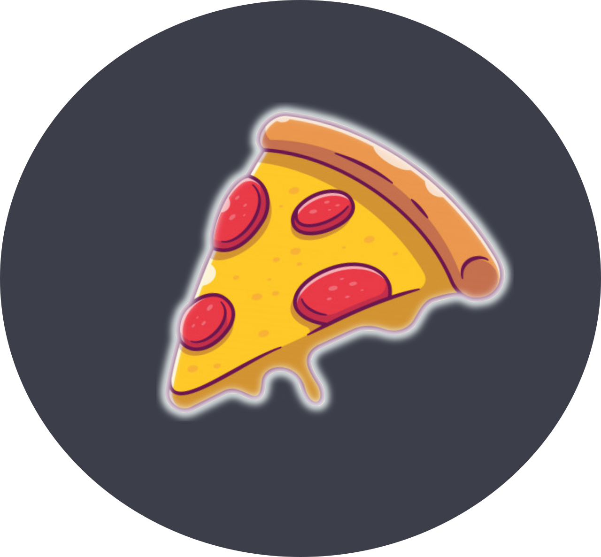

Esta página web es un blog personal, donde se comparten todos mis proyectos personales y tutoriales enriquecedores. Inicialmente el proyecto surge de una idea vaga sobre un pequeño blog personal. Con el tiempo y diferentes complicaciones que se han presentado en estos últimos años, decidí iniciar este proyecto con muchas ganas para concretar la idea. Actualmente (27 de enero del 2022), me encuentro desarrollando esta página web.
¡Hola! Mi nombre es Gonzalo Lopez. Vivo en Argentina y tengo 19 años. Me gusta mucho la programación, leer y hacer ejercicio. Mantengo una relación muy estrecha con el Software libre, ya que fue lo primero que me introdujo a la informática en general. Mis inicios son muy raros porque conocí al movimiento del Software Libre antes que la programación. No tenía un objetivo en específico, sino que era una actividad irregular en mi vida y algo fuera de lo común. No veo una vida diferente de la que tengo soñada, quiero dar lo mejor en cada una de mis actividades y tratar de superarme. La situación económica de Argentina es muy delicada, nos enfrentamos a una de las mayores crísis de la historia, estamos al borde del precipicio. Me declaro Liberal, creo en el orden espontáneo de las cosas e influenciado por diferentes liberales, llegué incluso, a comprarme el libro de Ludwing Von Misses (El Liberalismo). Desgraciadamente cuento con pocos ejemplares en mi pequeña biblioteca personal, pero con ganas de expandir mis conocimientos.